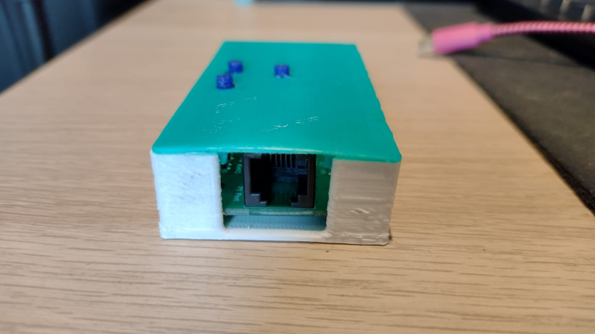

Volg deze video
Of volg deze aanwijzingen:
1. Verbinden met uw slimme meter
Gebruik de bijgeleverde kabel om de Twomes P1-Gateway te verbinden met de P1-poort op uw slimme
meter.

Deze poort is meestal te vinden op de voorkant of onderzijde van uw slimme meter.

De locatie van de P1-Poort op de Enexis ESMR5 Slimme Meter
Als u een DSMR versie 4.x slimme meter heeft:
Doe dan ook de USB stekker in de zijkant van de Twomes P1 Gateway, en steek de stekker in het
stopcontact

Als de P1 Gateway goed aangesloten is knippert er een groen lampje
de P1-Gateway is nu klaar om
te verbinden met de app
De Wi-Fi gegevens resetten
Als het Wi-Fi wachtwoord verandert, of als het verkeerde wachtwoord is ingevoerd kan het Wi-Fi wachtwoord
gereset worden door de knop "P2" 10 seconden lang ingedrukt te houden